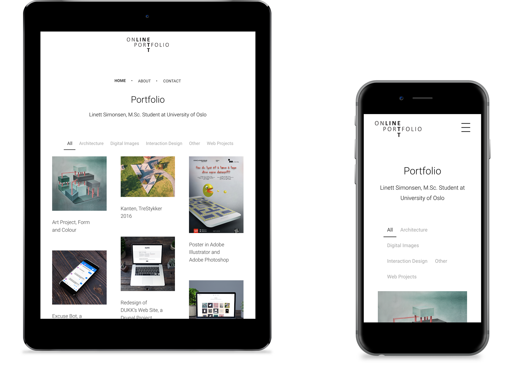

Portfolio (WCMS)
Portfolio for eget arbeid
Hobbyprosjekt, vår 2019
Kontekst
Formålet med dette prosjektet var å få kunnskap om prosessen å bygge opp et responsivt nettsted ved bruk av webpubliseringssystemet WordPress.
Figur: Portfolio for eget arbeid laget ved bruk av WordPress.

Figur: Nettstedet ble tilpasset ulike skjermstørrelser.